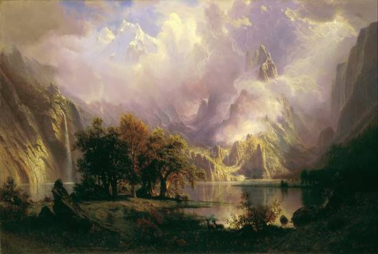
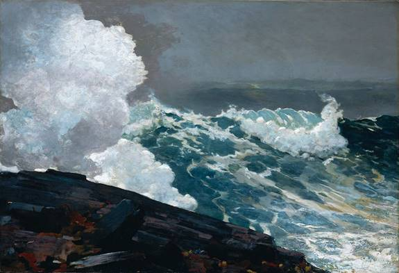
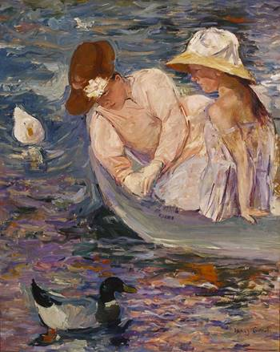
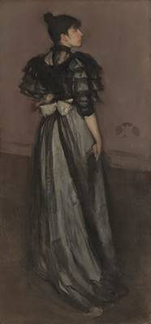

 Albert Bierstadt (January 7, 1830 – February 18, 1902) was a German-American painter best known for his lavish, sweeping landscapes of the American West. To paint the scenes, Bierstadt joined several journeys of the Westward Expansion. Though not the first artist to record these sites, Bierstadt was the foremost painter of these scenes for the remainder of the 19th century.
Born in Prussia, Bierstadt was brought to the United States at the age of one by his parents. He later returned to study painting for several years in Düsseldorf. He became part of the Hudson River School in New York, an informal group of like-minded painters who started painting along the Hudson River. Their style was based on carefully detailed paintings with romantic, almost glowing lighting, sometimes called luminism. An important interpreter of the western landscape, Bierstadt, along with Thomas Moran, is also grouped with the Rocky Mountain School.
Winslow Homer (February 24, 1836 – September 29, 1910) was an American landscape painter and printmaker, best known for his marine subjects. He is considered one of the foremost painters in 19th-century America and a preeminent figure in American art.
Largely self-taught, Homer began his career working as a commercial illustrator. He subsequently took up oil painting and produced major studio works characterized by the weight and density he exploited from the medium. He also worked extensively in watercolor, creating a fluid and prolific oeuvre, primarily chronicling his working vacations.
Mary Stevenson Cassatt (May 22, 1844 – June 14, 1926) was an American painter and printmaker. She was born in Allegheny City, Pennsylvania (Now part of Pittsburgh's North Side), but lived much of her adult life in France, where she first befriended Edgar Degas and later exhibited among the Impressionists. Cassatt often created images of the social and private lives of women, with particular emphasis on the intimate bonds between mothers and children.
She was described by Gustave Geffroy in 1894 as one of "les trois grandes dames" (the three great ladies) of Impressionism alongside Marie Bracquemond and Berthe Morisot.
James Abbott McNeill Whistler (July 11, 1834 – July 17, 1903) was an American artist, active during the American Gilded Age and based primarily in the United Kingdom. He was averse to sentimentality and moral allusion in painting, and was a leading proponent of the credo "art for art's sake". His famous signature for his paintings was in the shape of a stylized butterfly possessing a long stinger for a tail. The symbol was apt, for it combined both aspects of his personality: his art is characterized by a subtle delicacy, while his public persona was combative. He found a parallel between painting and music and entitled many of his paintings "arrangements", "harmonies", and "nocturnes", emphasizing the primacy of tonal harmony. His most famous painting is Arrangement in Grey and Black No. 1 (1871), commonly known as Whistler's Mother, the revered and often parodied portrait of motherhood. Whistler influenced the art world and the broader culture of his time with his artistic theories and his friendships with leading artists and writers.
Robert Lee Frost (March 26, 1874 – January 29, 1963) was an American poet. His work was initially published in England before it was published in America. Known for his realistic depictions of rural life and his command of American colloquial speech, Frost frequently wrote about settings from rural life in New England in the early twentieth century, using them to examine complex social and philosophical themes.
Frost was honored frequently during his lifetime, receiving four Pulitzer Prizes for Poetry. He became one of America's rare "public literary figures, almost an artistic institution." He was awarded the Congressional Gold Medal in 1960 for his poetic works. On July 22, 1961, Frost was named poet laureate of Vermont.
Stopping by Woods on a Snowy Evening
Whose woods these are I think I know.
His house is in the village though;
He will not see me stopping here
To watch his woods fill up with snow.
My little horse must think it queer
To stop without a farmhouse near
Between the woods and frozen lake
The darkest evening of the year.
He gives his harness bells a shake
To ask if there is some mistake.
The only other sound’s the sweep
Of easy wind and downy flake.
The woods are lovely, dark and deep,
But I have promises to keep,
And miles to go before I sleep,
And miles to go before I sleep.
Emily Elizabeth Dickinson (December 10, 1830 – May 15, 1886) was an American poet. Dickinson was born in Amherst, Massachusetts into a prominent family with strong ties to its community. After studying at the Amherst Academy for seven years in her youth, she briefly attended the Mount Holyoke Female Seminary before returning to her family's house in Amherst. Some argue that Dickinson lived much of her life in reclusive isolation. Considered an eccentric by locals, she developed a noted penchant for white clothing and became known for her reluctance to greet guests or, later in life, to even leave her bedroom. Dickinson never married, and most friendships between her and others depended entirely upon correspondence.[2]
While Dickinson was a prolific private poet, fewer than a dozen of her nearly 1,800 poems were published during her lifetime. The work that was published during her lifetime was usually altered significantly by the publishers to fit the conventional poetic rules of the time. Her poems are unique for the era in which she wrote; they contain short lines, typically lack titles, and often use slant rhyme as well as unconventional capitalization and punctuation. Many of her poems deal with themes of death and immortality, two recurring topics in letters to her friends.
They shut me up in Prose –
As when a little Girl
They put me in the Closet –
Because they liked me "still" –
Still! Could themself have peeped –
And seen my Brain – go round –
They might as wise have lodged a Bird
For Treason – in the Pound –
Emily Dickinson, c. 1862
Walter "Walt" Whitman ( May 31, 1819 – March 26, 1892) was an American poet, essayist, and journalist. A humanist, he was a part of the transition between transcendentalism and realism, incorporating both views in his works. Whitman is among the most influential poets in the American canon, often called the father of free verse.His work was very controversial in its time, particularly his poetry collection Leaves of Grass, which was described as obscene for its overt sexuality.
Born in Huntington on Long Island, Whitman worked as a journalist, a teacher, a government clerk, and—in addition to publishing his poetry—was a volunteer nurse during the American Civil War. Early in his career, he also produced a temperance novel, Franklin Evans (1842). Whitman's major work, Leaves of Grass, was first published in 1855 with his own money. The work was an attempt at reaching out to the common person with an American epic. He continued expanding and revising it until his death in 1892. After a stroke towards the end of his life, he moved to Camden, New Jersey, where his health further declined. When he died at age 72, his funeral became a public spectacle.
O Captain! my Captain! our fearful trip is done,
The ship has weather’d every rack, the prize we sought is won,
The port is near, the bells I hear, the people all exulting,
While follow eyes the steady keel, the vessel grim and daring;
But O heart! heart! heart!
O the bleeding drops of red,
Where on the deck my Captain lies,
Fallen cold and dead.
O Captain! my Captain! rise up and hear the bells;
Rise up—for you the flag is flung—for you the bugle trills,
For you bouquets and ribbon’d wreaths—for you the shores a-crowding,
For you they call, the swaying mass, their eager faces turning;
Here Captain! dear father!
This arm beneath your head!
It is some dream that on the deck,
You’ve fallen cold and dead.
My Captain does not answer, his lips are pale and still,
My father does not feel my arm, he has no pulse nor will,
The ship is anchor’d safe and sound, its voyage closed and done,
From fearful trip the victor ship comes in with object won;
Exult O shores, and ring O bells!
But I with mournful tread,
Walk the deck my Captain lies,
Fallen cold and dead.